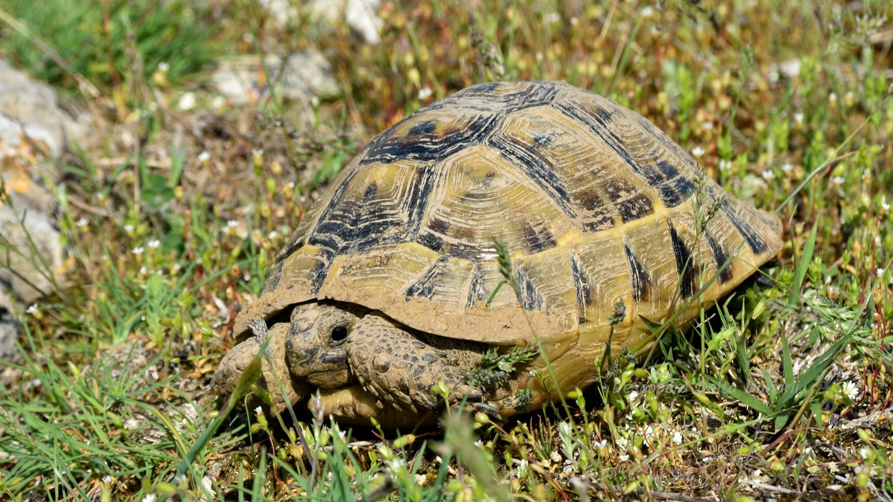

Biodiversitatea
Biodiversitatea este varietatea biologică și variabilitatea vieții pe Pământ.
Biodiversitatea este măsurarea variației la nivel genetic, de specii și de ecosistem.
Biodiversitatea terestră este de obicei mai mare în apropierea ecuatorului, care este rezultatul climatului cald și al producției primare ridicate.

1. Podișul Casimcei, aici se găsesc întinderi mari de vegetație de stepă, fiind una dintre cele mai importante zone cu astfel de caracteristici din Dobrogea.
plante si animale din stepa doborogeana

1. Țestoasa dobrogeană de uscat (Testudo graeca)
2. Șarpele de stepă (Eryx jaculus)
3. Călugărița (Mantis religiosa)
Stânjenel de stepă (Iris pumila)
silvostepa
În județul Constanța, mediul de silvostepă este întâlnit în zonele de tranziție dintre stepă și pădurile de foioase, unde condițiile climatice permit dezvoltarea unor specii arboricole dispersate printre întinderi de vegetație de stepă. Aceste zone se află mai ales în partea centrală și nordică a județului.
plante si animale din silvostepa
mediul de padure
În județul Constanța, mediile de pădure sunt mai rare comparativ cu alte zone ale României, având în vedere specificul geografic și climatic al regiunii, caracterizat de o climă mai uscată și de o predominanță a stepelor și a pădurilor de silvostepă.
plante si animale din mediul de padure

Vulpea
Rezervația marină 2 Mai Vama Veche este o rezervație naturală amplasată în sudul litoralului românesc, între localitatea 2 Mai și Vama Veche, la granița cu Bulgaria, acoperind o suprafață de cca 5.000 ha, de-a lungul a 7 km de coastă, întinzându-se de la linia coastei și până la izobata de 40 m. Pe o suprafață relativ restrânsă, adăpostește o mare varietate de habitate și biocenoze specifice zonei marine românești, specii rare sau aflate în pericol, habitate de importanță europeană.

Zona a fost declarată Arie de protecție specială avifaunistică prin Hotărârea de Guvern nr. 1284 din 24 octombrie 2007 (privind instituirea ariilor de protecție specială avifaunistică ca parte integrantă a rețelei ecologice europene Natura 2000 în România) și se întinde pe o suprafață de 6.096 hectare. Aceasta include rezervația naturală Pădurea Canaraua Fetii.
Specii de păsări protejate semnalate în arealul sitului:

acvilă de câmp

acvilă țipătoare mică

drepneaua neagră

drepneaua neagră

drepneaua neagră

drepneaua neagră